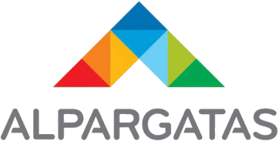

Busca
Fornecedor
40M+ empresas
busca multi-vetor
API · MCP · agentes
modelo próprio
atualização contínua
API
MCP
Agente

buscafornecedor.com.br · deck técnico
01 · Visão geral
40M+
estabelecimentos da Receita Federal como ponto de partida.
Qualificar fornecedores com
evidência de mercado,
não com listas internas.
Em operação por compradores B2B

Desafios resolvidos para o usuário final
Listas e planilhas
O sourcing ainda vive em arquivos soltos, repasses por e-mail e bases desatualizadas — lento para achar e difícil de repetir.
CNPJ e CNAE não bastam
Cadastro formal não descreve o que a empresa entrega de fato. O site traz a evidência — mas ler milhares de sites à mão não escala.
Busca genérica falha
Google e listas abertas misturam revendedor, fabricante e prestador. Falta ranquear por intenção, região e especialidade real.
Visão geral · problema e base de usuários
02 · Construção do banco
Do cadastro público
ao perfil pesquisável.
01
Base da Receita
Partimos de uma base nacional com mais de 40 milhões de estabelecimentos — o universo completo de empresas do país como ponto de partida.
02
Filtro de recorte
Excluímos MEI, autarquias, aberturas recentes e filiais — para focar em empresas com maior potencial de atendimento B2B.
03
Descoberta de site
Com os dados cadastrais, enriquecemos cada empresa elegível até encontrar o site oficial — a fonte da evidência de mercado.
04
Scrape em massa
Rede de proxies e controle de acesso para contornar bloqueios, lidar com sites lentos e escalar a leitura para milhões de páginas — às vezes com mais de uma tentativa.
05
Perfil com modelo próprio
Para reduzir custo, um modelo auto-hospedado — treinado para esta tarefa — extrai dados do site e monta o perfil estruturado da empresa.
06
Banco de busca
Cada perfil vira dimensões de busca (produto, serviço, clientes…) para o comprador encontrar por intenção — não só por palavra-chave.
Construção · da Receita ao índice de busca
02a · Scrape em massa
Ler milhões de sites
sem derrubar o acesso.
Partição de carga, não “fila única”
Várias faixas de proxy trabalham em paralelo, cada uma com seu ritmo. O objetivo é escalar a leitura e reduzir bloqueios — sem depender de um único caminho.
01
Anti-bloqueio
O acesso simula um navegador real e distribui as requisições entre várias origens, para sites com proteção anti-bot não cortarem o lote.
02
Proxies em faixas
A carga é dividida entre provedores/faixas — cada uma com limite próprio. Não é “tentar A e só depois B”: as faixas operam juntas.
03
Sites lentos e instáveis
Há espera controlada, limite por domínio e pausa automática quando um host falha demais — o resto do lote segue.
04
Escala + nova tentativa
Desenhado para milhões de páginas. Se a primeira leitura falhar ou o site exigir mais de um acesso, o sistema reprocessa sem refazer tudo do zero.
Scrape · proxies · controle de ritmo · escala
02b · Como o perfil é pesquisado
Seis dimensões
para uma busca guiada por atributos.
Por que separar em vetores?
Cada dimensão isola um atributo do perfil. Assim a busca deixa de ser “genérica” e passa a ser guiada — mais peso em serviço, produto ou clientes, conforme o que o usuário pediu.
Busca por atributos pontuais: o ranking combina similaridade semântica (vetores densos) com validação de termos específicos via BM25 (vetor esparso).
Denso
Descrição
Visão geral da empresa — o que ela é e como se apresenta no mercado.
Denso
Clientes
Clientes e projetos mais atuais, com foco no trabalho recente.
Denso
Público-alvo
Perfil de quem a empresa costuma atender — histórico de atuação.
Denso
Produtos
O que a empresa vende — catálogo e ofertas de produto.
Denso
Serviços
O que a empresa presta — instalação, consultoria, manutenção etc.
Esparso · BM25
Termos exatos
SKUs, marcas, códigos e jargões — valida a string no perfil, não só o sentido.
Possíveis expansões
Novo · denso
Certificações
Licenças, certificados e documentos do fornecedor no perfil.
Novo · esparso
Nomes de clientes
Busca direta por empresas que já possam ter sido atendidas.
Índice multi-vetor · significado + BM25
03 · Experiência de busca
Como o usuário
consulta o sistema.
01
Descreve a necessidade
Em linguagem natural — produto, serviço, região, urgência — no portal, WhatsApp, agente ou integração.
02
O sistema interpreta
Identifica se a busca pende para produto, serviço ou ambos e prepara a estratégia de ranking.
03
Ajusta os pesos
O agente (ou a API) reforça dimensões relevantes — ex.: mais peso em serviço + localização — antes de consultar o índice.
04
Recebe a shortlist
Lista ranqueada de fornecedores com perfil estruturado, pronta para o próximo passo no fluxo de compras.
Usuário
“Preciso de instalação de ar-condicionado industrial num raio de 50 km de Campinas, com experiência em plantas alimentícias.”
Agente
Prioriza serviço + clientes do setor + região. Devolve candidatos ranqueados — sem o usuário montar filtros técnicos.
Jornada · intenção → pesos → shortlist
04 · Retroalimentação
O banco acompanha
o que o site mostra hoje.
Processo contínuo: detectar mudanças nos sites já explorados, revisitar essas páginas e remontar o perfil com as informações novas — para a shortlist não envelhecer.
01
Detectar mudanças
Monitoramos sites já conhecidos para identificar alterações relevantes de conteúdo — novas ofertas, reposicionamento, páginas atualizadas.
→
02
Explorar de novo
Recoletamos o site com o mesmo cuidado da primeira passagem — incluindo páginas internas importantes e casos de carregamento lento.
→
03
Refazer o perfil
O modelo reconstrói o perfil com a evidência nova e atualiza as dimensões de busca — produto, serviço, clientes e demais vetores.
Atualização contínua · evidência fresca no índice
05 · Integração com Pipefy
Três modos de integração
sobre o mesmo núcleo de busca.
REST, MCP e Agente compartilham o mesmo serviço de ranking (multi-vetor + BM25 + filtros). A diferença está no contrato de consumo e no grau de orquestração.
01 · REST API
Integração HTTP
- POST /search/text — envia o texto da necessidade, pesos por dimensão (produto, serviço, clientes…), filtros geográficos e, se quiser, uma query BM25 para termos exatos.
- GET /config — devolve o contrato público da busca: dimensões disponíveis, limites, flags de BM25 e autenticação esperada.
- Auth via API key ou JWT do comprador. A resposta é JSON com a shortlist ranqueada, scores por dimensão e metadados para o card.
- No Pipefy: uma automação ou HTTP Request / webhook de saída dispara a busca quando o card muda de fase (ex.: “qualificar fornecedores”).
- Adequado quando o fluxo é estável: mesmos campos, mesma regra, resultado previsível no pipe.
Fluxos determinísticos · regras fixas no pipe
02 · MCP
Protocolo de ferramentas
- O endpoint /mcp (Streamable HTTP) registra tools tipadas que qualquer cliente MCP consegue descobrir e chamar.
- Tools principais: search_text (mesma busca da API), get_config (descobrir pesos/filtros) e tools de conversa para manter contexto.
- Paridade 1:1 com o REST — mesmo motor de ranking, mesma auth, mesmos filtros. Não há “versão sombra” da busca.
- No Pipefy: um runtime ou agente MCP-compatible consome as tools sem reimplementar Qdrant, embeddings ou BM25.
- Útil para padronizar o contrato entre Pipefy, Copilot, Claude e outras ferramentas que falem MCP.
Contrato padrão · clientes MCP e IDEs
03 · Agente
Orquestração conversacional
- Uma camada de agente (Pipefy AI, Copilot ou similar) interpreta a intenção em linguagem natural e decide quando chamar a busca.
- Antes do search_text, o agente pode ajustar pesos (mais serviço, menos produto) e filtros de região com base no diálogo.
- Em multi-turno, refina a shortlist (“só quem atende plantas alimentícias”, “aumenta o raio”) sem o usuário montar a query técnica.
- O resultado volta formatado no card; aprovações, SLAs e governança continuam no Pipefy.
- Encaixa quando cada solicitação é diferente e a orquestração precisa raciocinar, não só executar um HTTP fixo.
Intenção variável · multi-turno
Integração · REST · MCP · Agente